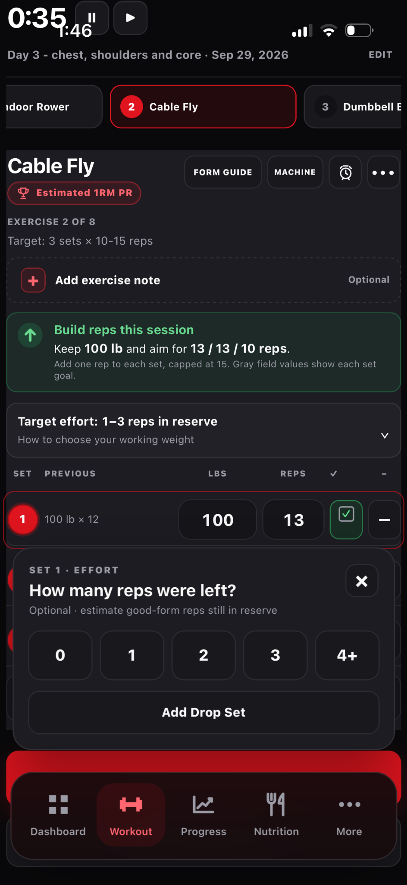
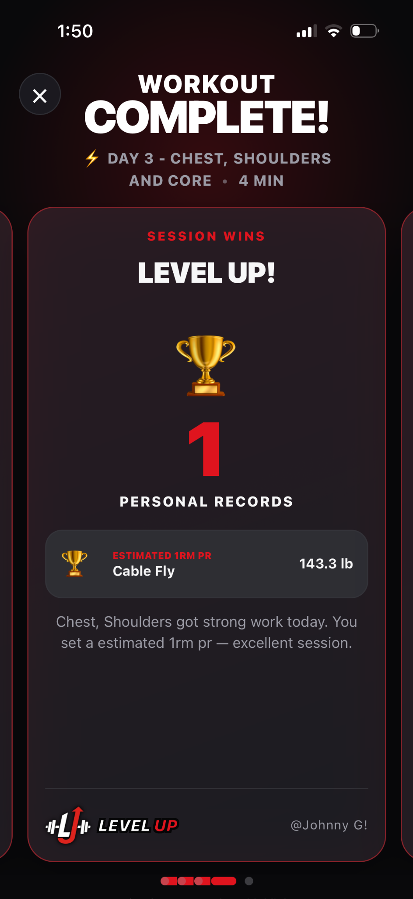

Understand personal records
Weight and estimated 1RM records describe different achievements.
How to use it
- Complete a set with a valid load and rep count.
- A weight PR marks your heaviest logged load for an exercise.
- An estimated 1RM PR marks the highest strength estimate from your recorded set.
- Review the recap and Workout History; one set can earn both.
See it in Level Up


What the evidence means
Estimated 1RM is a calculation from reps and load, not a measured one-repetition test. Compare similar execution and rep ranges.
What counts as a PR?
Level Up compares a completed workout with earlier saved sessions for the same exercise and equipment profile. This keeps a different machine’s resistance from silently replacing your prior record for another machine. The first session establishes a baseline; a later session must exceed it to earn a PR. Merely matching a record does not count.
Your highest valid load for at least one rep is higher than the previous highest load. Example: 105 lb × 5 can be a weight PR over a previous 100 lb maximum.
Estimated 1RM PRAny completed set’s Epley estimate exceeds the previous best by more than 0.01 lb. Example: 100 lb × 8 estimates 126.7 lb; 105 lb × 7 estimates 129.5 lb, so the latter is an estimated 1RM PR.
Reps PRFor an exercise tracked without positive external load, a higher completed rep count beats the previous best rep count.
A set may achieve both weight and estimated 1RM PRs. The workout summary counts that exercise once, while the detail names both record types. Warm-up and incomplete sets are not intended as performance records; review a completed workout after correcting a mistaken set so the comparison can be recalculated from saved history.
Why distinguish the two weighted records?
A heavier single set and a better estimated maximum are related but not interchangeable. Increasing load while completing far fewer reps can set a weight PR without improving the estimate. Conversely, completing many more reps at the same load can improve estimated strength without a new heaviest load. PRs describe your logged performance, not a direct measurement of muscle gain.
Source
- Research on uncertainty in predicted 1RM. The PR threshold, baseline behavior and equipment-profile matching are Level Up rules.